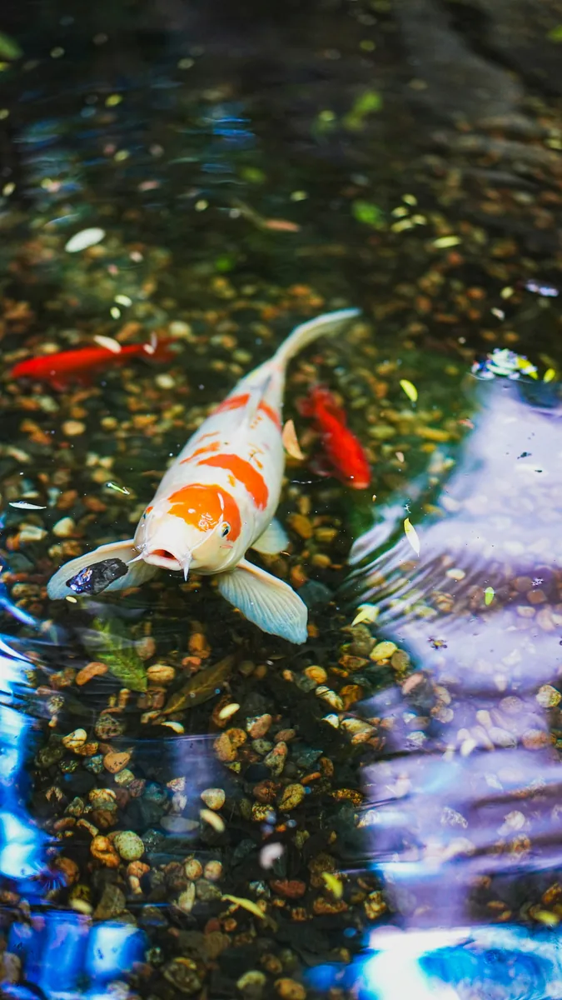

Introduction to Aquaculture
Learning Objectives
- Define aquaculture and explain its historical background
- Distinguish between freshwater, brackish water, and saltwater aquaculture environments
- Explain the importance of aquaculture in Papua New Guinea
What is Aquaculture?
Aquaculture is the controlled farming of aquatic organisms — fish, shellfish, crustaceans, and aquatic plants — in freshwater, brackish water, or saltwater environments. It is sometimes described as "the underwater equivalent of agriculture."
Unlike capture fishery (where fish are caught from the wild), aquaculture involves deliberately stocking, feeding, and managing aquatic species to increase production.

Brief History of Aquaculture
Aquaculture is one of the oldest forms of food production. Ancient Egyptians farmed fish in ponds along the Nile River. In China, carp farming dates back more than 2,500 years. In Papua New Guinea, traditional communities have practised fish trapping and management in rivers and coastal areas for generations.
Types of Aquatic Environments
Freshwater Aquaculture
Farming in rivers, lakes, ponds, and dams. Fresh water contains less than 0.5 parts per thousand (ppt) of dissolved salt. Common species farmed in freshwater include:
- Tilapia — a hardy, fast-growing fish popular in tropical freshwater farming
- Common carp — one of the oldest farmed fish in the world
- Catfish — farmed widely in tropical regions for food
- Freshwater prawns
Brackish Water Aquaculture
Brackish water contains between 0.5 and 30 ppt of dissolved salt — a mix between freshwater and seawater. Found in river mouths, mangroves, and coastal lagoons. Common species include:
- Milkfish (bangus) — a major aquaculture species in the Pacific
- Tiger prawns and shrimp
- Mud crab — highly valued in Pacific Island markets
- Barramundi (giant perch)
Saltwater (Marine) Aquaculture
Farming in the open sea or enclosed coastal areas. Saltwater contains more than 30 ppt dissolved salt. Common species include:
- Sea bass and grouper — high-value fish farmed in sea cages
- Oysters, mussels, and clams — bivalves grown on ropes or in mesh bags
- Sea cucumbers (bêche-de-mer) — highly valued in export markets, particularly to Asia
- Giant clam — farmed in some Pacific Island communities
- Seaweed (Kappaphycus) — farmed for use in food products and cosmetics
Importance of Aquaculture in Papua New Guinea
Papua New Guinea has extraordinary aquatic resources — thousands of kilometres of coastline, major river systems (including the Sepik and Fly Rivers), and rich coral reef ecosystems. Aquaculture is important for several reasons:
- Food security — fish is a critical source of protein for many communities, especially in coastal and island areas
- Income generation — fish farming provides a cash income for smallholder farmers
- Reducing pressure on wild fisheries — aquaculture can supplement capture fishing and reduce overfishing of natural stocks
- Employment — the aquaculture industry creates jobs in rural communities
- Export earnings — sea cucumber, coral trout, and other species are exported to international markets
Key Terms
📝 Summary — What You Should Know
- Aquaculture is the controlled farming of aquatic organisms — fish, shellfish, crustaceans, and plants
- The three main environments are freshwater (rivers/ponds), brackish water (mangroves/river mouths), and saltwater (sea)
- Common freshwater species include tilapia and carp; brackish water includes milkfish and mud crab; saltwater includes sea cucumber and seaweed
- Papua New Guinea has rich aquatic resources including major rivers, extensive coastline, and coral reefs
- Aquaculture supports food security, income generation, and reduces pressure on wild fish stocks
Check Your Understanding
Answer all questions then submit to see how you did.
1. What is aquaculture?
2. What salt content defines freshwater?
3. Which species is commonly farmed in brackish water environments in the Pacific?
4. What is bêche-de-mer?
5. Which of the following is NOT a reason why aquaculture is important in Papua New Guinea?